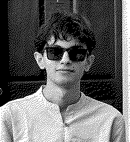

the menu is at the bottom. it's quieter down there.
vinay
Hi. I study maths and computing at IISc Bangalore, do research at DREAM:Lab,
and argue with ideas for fun.
who

I'm quiet when you first meet me. Give it a while. It gets weirder.
I like doing things my own way. Not to be difficult, I just want to know
what happens if I don't do it the usual way.
I argue with ideas, not people. If you tell me something is obvious,
I'll probably take the other side, just to see if it holds up.
(the photo has two colours. here's the one with all of them.)
things I did to see if I could
- Cycled 124 km. I was fairly sure I couldn't. Turns out I could.
- Ran 20 km. Same experiment, fewer wheels.
- Got through a lab research paper that nearly flattened me. Different muscles, same idea.
- Decided one day to learn Rust. No particular reason. That's usually the best kind.
None of these were for a medal. I just wanted to know.
things I like
- Music, paintings, films. I don't make art. I'm a very committed audience.
- Philosophy, most of it: why we live, what a mind is, how to live well,
how we know anything at all. I don't have answers. I'd be suspicious of anyone who did.
- Maths. Some days I love it. Some days I hate it. Both feel like part of the deal.
- Short GoPro clips of whatever I'm doing. Nobody asked for them. I make them anyway.
what I'm working on
At DREAM:Lab we're working on durable execution of dynamic agents.
AI agents that decide their next step as they go are great, right up until
something crashes halfway through. We want them to pick up where they left off
instead of starting over.
Things I've built on the side:
- MLauto —
an ML researcher that isn't a person. It reads a dataset, looks up tutorials,
and uses Monte Carlo Tree Search to design, run and fix its own experiments.
- MLauto-agentcore —
the same idea, split into separate agents, each running as its own service
on AWS Bedrock AgentCore.
- LLM-Visualization —
a real-time 3D look inside a large language model.
- Intro-to-SSM —
notes and experiments on state space models (Mamba and friends).
- turboquant —
making language models smaller without making them dumber.
- fame-sandbox —
turns any virtual machine into a sandbox that speaks MCP.
The rest lives on GitHub.
talk to me
If something on this page made you want to disagree with me, that's a good
reason to write. So is anything on this list, which I'll happily talk about for too long:
- whether machines can actually think
- whether maths is invented or discovered (I switch sides depending on the day)
- what makes a painting, a song or a film stay with you
- something hard you did just to see if you could
- why you think I'm wrong
Email: karmanvinay@gmail.com
Also: GitHub ·
LinkedIn
Guestbook: email me. I read every entry. I publish none of them.
menu (told you):
who |
things I did |
things I like |
work |
talk to me
[ ← prev |
random |
next → ]
the vinay webring · members: 1
this page is under construction. so is the author.
you are visitor number 1. so is everyone.
best viewed at any resolution, preferably on a slow afternoon.
last modified: recently